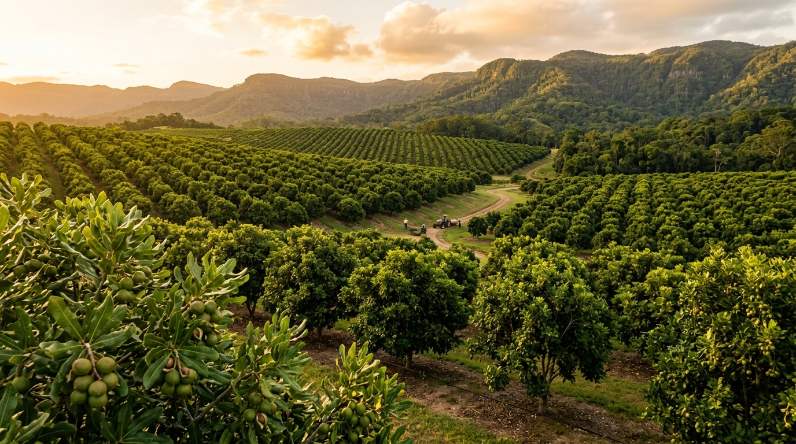

שישים מיליון שנה ועץ אחד
עצי מקדמיה התפתחו ביערות הגשם הסובטרופיים של מזרח אוסטרליה לפני כ-60 מיליון שנה, הרבה לפני שבני אדם הופיעו ביבשת. הם חלק ממשפחת ה-Proteaceae, אותה משפחה בוטנית של פרוטאה ובנקסיה, צמחים שהתפתחו בגונדוואנה הקדומה. מכל הצמחים המקומיים של אוסטרליה, מקדמיה הוא היחיד שהפך למזון מסחרי בינלאומי. היחיד.
האבוריג'ינים הכירו את העץ אלפי שנים לפני שאירופאי כלשהו שמע עליו. הם קראו לו בשמות שונים לפי אזור ושבט: "קינדל קינדל" (Kindal Kindal), "בומברה" (Boombera), "ג'ינדילי" (Jindilli), "באפאל" (Baphal). האגוזים לא היו מזון יומיומי, הם נחשבו למעדן, נאספו בקפידה, נסחרו בין שבטים, ושימשו כמתנה טקסית ב"קורובורי" (טקסים בין-שבטיים). האבוריג'ינים פיתחו טכניקת פיצוח מתוחכמת: סלע בסיס עם שקע להחזקת האגוז, סלע שטוח מעל, ומכה מדויקת עם סלע פטיש, מפזרת את הכוח ושוברת את הקליפה בנקיון, בלי לרסק את הגרעין.
מכל הצמחים המקומיים של אוסטרליה, ארץ עם אלפי מינים ייחודיים, רק אחד הפך למוצר מזון מסחרי עולמי: המקדמיה. ב-60 מיליון שנה, הוא שרד קרחונים, יובש ולוחות טקטוניים.
בשנות ה-1850, שני בוטנאים אירופיים, וולטר היל, מנהל הגנים הבוטניים של בריסביין, ופרדיננד פון מילר, בוטנאי גרמני, גילו את העצים וסיווגו שני מינים מסחריים: Macadamia integrifolia (קליפה חלקה, איכות צלייה מעולה) ו-Macadamia tetraphylla (קליפה מחוספסת). השם "מקדמיה" ניתן על ידי פון מילר לכבוד חברו, הפילוסוף והכימאי הסקוטי ד"ר ג'ון מקאדם, שלמרבה הגורל, מעולם לא טעם את האגוז שנקרא על שמו.
ב-1858, וולטר היל שתל את עץ המקדמיה הראשון בגנים הבוטניים של בריסביין. העץ הזה עדיין חי, עדיין מניב אגוזים, ועדיין מקבל מבקרים. אבל הסיפור המטורף באמת? ב-2019, מחקר גנטי חשף שרוב עצי המקדמיה המסחריים בעולם, כ-70%, מגיעים ככל הנראה מעץ בודד אחד בקווינסלנד, באזור שנקרא Mooloo. זרעים מהעץ הזה הגיעו להוואי בשנות ה-1880, ומשם לכל העולם. מבחינה גנטית, תעשיית המקדמיה העולמית היא כמעט שיבוט של עץ אחד.
מגוון גנטי צר = פגיעות. מחלה אחת שתתאים לגנוטיפ הזה יכולה לחסל מטעים שלמים. חוקרים אוסטרליים עובדים כעת על הכנסת חומר גנטי מעצי בר באוסטרליה, שם המגוון הרבה יותר רחב, כדי לחזק את העמידות. שלושה מתוך ארבעת מיני המקדמיה הפראיים באוסטרליה מסווגים כמאוימים, ואחד כנתון בסכנת הכחדה.
מאוסטרליה להוואי, ומשם לעולם
הסיפור של איך אגוז אוסטרלי הפך ל"אגוז הוואיאני" הוא סיפור של הזדמנות, טעות שיווקית, ושתילה שלא כוונה לאגוזים כלל. ב-1882, ויליאם הרברט פרוויס, חקלאי סוכר הוואיאני, הביא זרעי מקדמיה מקווינסלנד, לא בשביל האגוזים, אלא כשובר רוח למטעי קנה הסוכר שלו. בהמשך, ר.א. ג'ורדן הביא עוד זרעים ושתל בהונולולו.
ההוואיאנים גילו מה שהאבוריג'ינים ידעו מזמן: האגוזים טעימים להפליא. בשנות ה-1920, התחילו לשתול מטעים מסחריים. ב-1938, אלף הקטר. ב-1948, Mauna Loa, שתהפוך לחברת המקדמיה הגדולה בעולם, הקימה מטע ענק. מוצרי "Royal Hawaiian" שיווקו את המקדמיה כמותג פרימיום, והאגוז נקשר לתמיד עם הוואי בתודעה האמריקאית.
בינתיים, באוסטרליה, התעשייה התפתחה לאט. רק בשנות ה-60 הפכה לייצור מסחרי, הודות לנורם גרבר שפיתח טכניקות הרכבה (grafting) שאפשרו שכפול של זנים מעולים. בשנת 2000, אוסטרליה עקפה את הוואי. אבל העליה הגדולה האמיתית הגיעה ממקום אחר: דרום אפריקה. משנות ה-2010, דרום אפריקה, עם יותר מ-50 אלף הקטר, עקפה את אוסטרליה והפכה ליצרנית הגדולה בעולם. וסין, שהתחילה לשתול מקדמיה רק בשנות ה-90 ביונאן, גואנגשי וגואנגדונג, הפכה ליצרנית השלישית.
קניה צמחה גם היא במהירות, ומאחוריה: גואטמלה, מלאווי, ברזיל, וייטנאם, זימבבואה. ב-2025, הייצור הגלובלי: כ-344 אלף טון (בקליפה). שוק של כמעט 2 מיליארד דולר, שצפוי להכפיל את עצמו בתוך עשור.

הגאוגרפיה, דרום אפריקה מובילה, סין רצה, אוסטרליה מתגאה
עם 344 אלף טון בקליפה ב-2025 וכ-95 אלף טון גרעין, שוק המקדמיה הוא הצומח ביותר מבין אגוזי העץ. שלושה שחקנים עיקריים מחזיקים 84% מהייצור, אבל המפה משתנה: דרום אפריקה בראש, קניה עולה, סין פוטנציאל ענק.
| מדינה | ייצור | מאפיין | מגמה |
|---|---|---|---|
| דרום אפריקה | ~34K טון גרעין | 50K+ הקטר, מובילה עולמית | ↑↑ הרחבה |
| אוסטרליה | ~27K טון גרעין | ארץ המקור, איכות פרימיום | ↑ יציב |
| קניה | ~19K טון גרעין | גידול מהיר, smallholders | ↑↑ מהיר |
| ארה"ב (הוואי) | ~7K טון גרעין | מותג, עלויות גבוהות | → יציב |
| סין | ~5K טון גרעין | יונאן, גואנגשי, צמיחה | ↑↑↑ פוטנציאל |
| גואטמלה, מלאווי, זימבבואה | ~3K טון גרעין | שווקים מתפתחים | ↑ צמיחה |
סין, הלקוח הגדול
סין אינה רק יצרנית אלא גם השוק הצרכני הצומח ביותר. ביקוש סיני למקדמיה זינק: חטיפי מקדמיה בטעמים מקומיים (וואסאבי, שום-פלפל, חמש תבלינים) הפכו לתופעה תרבותית. מותגי שי (omiyage style) המבוססים על מקדמיה מובאת מהוואי נמכרים בפרמיום כפול. התוצאה: מחירי מקדמיה מושפעים כיום מאוד מהביקוש הסיני.
מהעץ ועד האריזה, הקליפה הקשה ביותר בעולם
עץ מקדמיה דורש סבלנות קיצונית. משתילה ועד יבול ראשון: 7–10 שנים. עד יבול מלא: 12–15 שנים. אבל ברגע שהעץ מבוגר, הוא יכול להניב מעל 100 שנה. עץ בוגר מגיע לגובה 12–18 מטר, מעדיף קרקע פורייה ומנוקזת, גשם של 1,000–2,000 מ"מ בשנה, וטמפרטורה שלא יורדת מתחת ל-10°C. הוא רגיש לרוחות חזקות (שורשים רדודים) ולמחלת Phytophthora, אויבת משפחת Proteaceae.
לקליפת המקדמיה (endocarp) יש את הקשיות הגבוהה ביותר מכל אגוז מסחרי, 300 ק"ג לסנטימטר מרובע של כוח נדרש לפיצוח. בני אדם לא יכולים לפצח אותה ביד. צריך כלי פיצוח מיוחד, או תעשייתית, מכונה. זו גם הסיבה שהאבוריג'ינים פיתחו את שיטת שלושת הסלעים. קקדואים (תוכי ענק אוסטרלי) הם מהחיות הבודדות שמסוגלות לפצח את הקליפה במקור.
הקטיף שונה מהשקד, הפקאן ואגוז המלך: אין ניעור. אגוזי מקדמיה לא נושרים מהעץ כשהם בשלים, או שנושרים, תלוי בזן, ולכן הקטיף נעשה בשילוב של איסוף מהקרקע וקטיף ידני מהעץ. זו הסיבה שהאגוז יקר: תהליך איטי, עתיר עבודה.
הזנים, מאוס
IMAGE
האירוניה של תעשיית המקדמיה: אוסטרליה היא הבית, אבל רוב הזנים המסחריים פותחו בהוואי מזרעים אוסטרליים, ואז חזרו לאוסטרליה. מבחינה גנטית, רוב המטעים בעולם מבוססים על בסיס צר מאוד, הכל כמעט מגיע מאותו מקור בודד.
הכלאה בין integrifolia ל-tetraphylla. פותח בהוואי, נשתל רחבות באוסטרליה, דרום אפריקה וניו זילנד. גרעין גדול, תפוקה גבוהה (18 ק"ג מעץ בן 8), קליפה קלה לפיצוח יחסית. חיסרון: קליפה פחות אטומה, רגישות לעובש.
זן דרום-אפריקאי מ-integrifolia / tetraphylla. גרעין איכותי, אחוז גבוה של שלמים (wholes). נחשב פרימיום. חיסרון: לוקח שלוש שנים יותר להגיע לבגרות בהשוואה לזנים אחרים.
מהזנים הותיקים של Hawaii Agricultural Experiment Station. עגול, גרעין בהיר, טעם חמאתי קלאסי. אחד הזנים שבנו את המוניטין של "Mauna Loa" ו-"Royal Hawaiian".
סיווג מסחרי, Style
| סטייל | תיאור | שימוש | מחיר יחסי |
|---|---|---|---|
| Style 0 | שלמים, ללא פגם | פרימיום, חטיף, מתנות, קמעונאי | הגבוה ביותר |
| Style 1 | שלמים עם פגמים קלים | קמעונאי, אריזות | גבוה |
| Style 4 | חצאים ורבעים | קונדיטוריה, שוקולד, אפייה | בינוני |
| Style 4L | חצאים גדולים | תעשייה, מרכיבים | בינוני |
| Style 5–8 | שבורים, פירורים, אבקה | תעשייה, שמן, קמח | הנמוך ביותר |
מה בפנים, הפרופיל התזונתי
מקדמיה הוא האגוז השמנוני ביותר בעולם, 75.8 גרם שומן ל-100 גרם. יותר מפקאן (72g), אגוז מלך (65g), ושקד (49g). אבל, והנה הנקודה, 78% מהשומן הזה הוא חד בלתי רווי (monounsaturated), חומצה פלמיטולאית וחומצה אולאית. מקדמיה מכילה את הריכוז הגבוה ביותר של שומן חד בלתי רווי מכל מזון טבעי.
| רכיב | כמות ל-100g | % ערך יומי | הערה |
|---|---|---|---|
| אנרגיה | 718 קק"ל | 36% | הגבוה ביותר מכל אגוז |
| שומן כולל | 75.8g | 97% | 78% חד בלתי רווי |
| שומן חד בלתי רווי | 58.9g | הגבוה ביותר מכל מזון טבעי | |
| שומן רב בלתי רווי | 1.5g | נמוך מאוד | |
| שומן רווי | 12.1g | 61% | בינוני |
| חלבון | 7.9g | 16% | הנמוך ביותר בין אגוזי עץ |
| פחמימות | 13.8g | 5% | נטו ~5g (קטו) |
| סיבים תזונתיים | 8.6g | 31% | גבוה |
| מנגן | 4.1mg | 178% | גבוה מאוד |
| תיאמין (B1) | 1.2mg | 100% | 100% מהיומי |
| נחושת | 0.76mg | 84% | גבוה |
| מגנזיום | 130mg | 31% | טוב |
| ברזל | 3.7mg | 21% | גבוה לאגוז |
| חומצה פלמיטולאית (Omega-7) | ~17g | הגבוה ביותר מכל מזון |
718 קלוריות למאה גרם, הגבוה ביותר מכל אגוזי העץ הנפוצים. 7.9 גרם חלבון, הנמוך ביותר (לעומת 21.2 בשקד). פחמימות נטו נמוכות מאוד (~5g), מה שהפך את המקדמיה לאגוז האהוב על דיאטת קטו.
מה שמייחד: חומצה פלמיטולאית (omega-7), חומצת שומן נדירה במזון, שמקדמיה מכילה באחוזים הגבוהים ביותר מכל מקור טבעי. מחקרים מקדימים מצביעים על קשר בין omega-7 לבין שיפור רגישות לאינסולין וירידה בדלקת, אבל המחקר עדיין בשלבים ראשוניים. מנה סטנדרטית: 28 גרם, כ-10–12 אגוזים, 204 קלוריות.
השילוב של 78% שומן חד בלתי רווי + לחות נמוכה מאוד (1.5%) יוצר את הטקסטורה הייחודית: קריספי מבחוץ, חמאתי-קרמי מבפנים, נמס על הלשון. אין אגוז אחר שמרגיש ככה. זו לא סתם שומניות, זו ארכיטקטורה של שומן ולחות שמייצרת תחושת פה ייחודית.
מה עושים איתו
מקדמיה הוא אגוז של מותרות. אין אגוז מקדמיה בחטיפי גרנולה זולים. יש אגוז מקד
שימושים עיקריים
קלוי ומלוח: השימוש הקלאסי. אריזות קטנות ויקרות. הוואי בנתה מותג שלם סביב "macadamia nuts, chocolate-coated" כמתנת תיירים. בשוקולד: שוקולד חלב או מריר עם מקדמיה שלמה, קלאסיקה. באפייה: עוגיות מקדמיה עם שוקולד לבן (White Chocolate Macadamia Cookie) הן סטנדרט בקונדיטוריה אמריקאית. שמן מקדמיה: יציב בחום (נקודת עשן 210°C), עשיר ב-omega-7, משמש לטיגון עדין, לסלטים, ולקוסמטיקה.
מקדמיה בתרבויות העולם
בהוואי, סמל תרבותי. מקדמיה מצופה שוקולד היא המתנה מהוואי. באוסטרליה, גאווה לאומית, "Australia's own nut". שמן מקדמיה בקוסמטיקה אוסטרלית. ביפן, שוק פרימיום, מקדמיה בחטיפי KitKat ובמוצרי מתנה (omiyage). בסין, הפופולריות מתפוצצת: חטיפי מקדמיה בטעמים של וואסאבי, שום-פלפל, חמש תבלינים. בדרום אפריקה, חמאת מקדמיה, שמן, ומוצרי פרימיום מקומיים. בדרום קוריאה, "פרשת האגוזים" של קוריאן אייר ב-2014: סגנית נשיא החברה תקפה דייל אוויר כי אגוזי המקדמיה הוגשו בשקית ולא בצלחת. הטיסה חזרה לשער, היא נשלחה לכלא. מקדמיה הפכה לסמל של יהירות תאגידית.
בישראל: נוכחות צומחת. אגוזי מקדמיה קלויים נמכרים בחנויות טבע ובסופרמרקטים פרימיום. בקונדיטוריות בוטיק, מופיע יותר ויותר.
איכות, טריות ואחסון
מקדמיה, עם תכולת השומן הגבוהה ביותר מכל האגוזים, אמורה להיות רגישה לחמצון, אבל דווקא לא. 78% שומן חד בלתי רווי מתחמצן לאט בהרבה מהשומן הרב בלתי רווי של אגוז מלך. בנוסף, הלחות הנמוכה מאוד (1.5%) מגנה. התוצאה: מקדמיה שמורה טוב יותר ממה שהיית מצפה.
איך מזהים מקדמיה טובה: צבע, קרם בהיר אחיד. הכהייה = חמצון או קלייה חזקה מדי. מרקם, קריספי, נשבר בנקיון, חמאתי-קרמי פנימה. לא גומי, לא שביר. ריח, חמאתי עדין. ריח שמן ישן = רנסידיות. טעם, עדין, חמאתי, מתקתק קלות. מרירות = בעיה.
| מצב | אחסון | משך | הערות |
|---|---|---|---|
| בקליפה הקשה | קריר ויבש, אפל | עד 6 חודשים | הכי עמיד |
| קלופים, מקרר | מיכל אטום, 4°C | עד 3 חודשים | חובה, סופג ריחות |
| מקפיא | שקית ואקום | עד שנה | מצוין לטווח ארוך |
| שמן מקדמיה | צנצנת כהה, מקרר | עד 6 חודשים | יציב מאוד |
בקליפה הקשה, עד שישה חודשים במקום קריר ויבש. קלופים, מיכל אטום במקרר, עד שלושה חודשים. מקפיא, עד שנה. מקדמיה סופגת ריחות בקלות, הרחיקו מבצל, שום, תבלינים. היתרון: תכולת שומן חד בלתי רווי גבוהה = יציבות חמצונית טובה יחסית.
| קריטריון | טוב | גרוע |
|---|---|---|
| צבע | קרם בהיר אחיד | כהה, צהבהב, כתמים |
| מרקם | קריספי, חמאתי-קרמי | גומי, שביר, יבש מדי |
| ריח | חמאתי עדין, נקי | שמן ישן, חריף, עפוץ |
| טעם | עדין, מתקתק, חמאתי | מר, חמוץ, לא טעים |
| אריזה | ואקום, תאריך עדכני | פתוח, ללא תאריך |
רגישויות ודגשים בטיחותיים
מקדמיה מסווגת כאגוז עץ, אלרגן מחייב סימון. רגישות צולבת עם אגוזי עץ אחרים (קשיו, אגוז מלך, פקאן) קיימת ודורשת בדיקה אלרגולוגית ספציפית. בניגוד ללוז, אלרגיה למקדמיה פחות נפוצה, אבל כשהיא מופיעה, יכולה להיות חמורה.
מקדמיה הוא האגוז היחיד שרעיל באופן ספציפי לכלבים. אפילו כמות קטנה, 2–3 אגוזים לכלב קטן, יכולה לגרום לחולשה, הקאות, רעד, וחום גוף מוגבר. התסמינים מופיעים תוך 12 שעות ובדרך כלל חולפים תוך 48 שעות, אבל במקרים חמורים דרוש טיפול וטרינרי מיידי. אם נפל אגוז מקדמיה על הרצפה, כלב לא צריך לאכול אותו. חתולים, לשם השוואה, אינם מושפעים.
אגוזי מקדמיה שלמים, עגולים, חלקים, קשים, עלולים להוות סכנת חנק לילדים קטנים. חתכו לחצאים לפני הגשה. ככלל בטיחות: Style 4 (חצאים) בטוח יותר לילדים מ-Style 0 (שלמים).
מקדמיה קלויה במלח: הכמות הגבוהה של שומן סופגת מלח בקלות. קל לאכול יתר על המידה. 10–12 אגוזים = 204 קלוריות. מומלץ לאכול מתוך קערה קטנה ולא מהשקית. שמן מקדמיה בקוסמטיקה: בטוח לשימוש חיצוני, אפילו עם רגישות קלה לאגוז (רגישות לחלבון, לא לשמן). אבל עם אלרגיה ידועה, התייעצו עם רופא.
סיכום, מה שנשאר
מקדמיה הוא אגוז של קצוות. הכי יקר. הכי שמנוני. הכי קשה לפצח. הכי איטי לגדל. הכי צר גנטית. ובמקביל, הכי חמאתי, הכי קרמי, הכי ייחודי במרקם ובטעם. אין תחליף ולא תהיה תחליף. זו לא שאלה של מחקר או טכנולוגיה, זו שאלה של 60 מיליון שנה של אבולוציה ביערות הגשם של קווינסלנד.
הסיפור של מקדמיה הוא גם סיפור על איך מזון מקומי הופך גלובלי: אבוריג'ינים אכלו אותו אלפי שנים, בוטנאים אירופיים נתנו לו שם, חקלאי סוכר הוואיאני שתל אותו כשובר רוח, הוואי בנתה תעשייה, אוסטרליה לקחה בחזרה, דרום אפריקה עקפה את כולם, וסין הפכה לשוק הגדול. ו-70% מהמאגר הגנטי, מעץ בודד אחד.
מ-60 מיליון שנה ביערות הגשם של קווינסלנד, דרך טקסי קורובורי אבוריג'ניים, מטעי קנה סוכר בהוואי, וחוות בדרום אפריקה, עד לשקית הפרימיום בסופר בישראל. עץ אחד, קליפה אחת בלתי שבירה, וטעם שאין כמוהו.
מדריך רכישה
לקנייה: צבע קרם בהיר אחיד (בהיר = טרי). אריזת ואקום עדיפה. Style 0 (שלמים) לחטיף, Style 4 (חצאים) לאפייה. בדקו תאריך, מקדמיה לא אמורה להריח כמו שמן ישן.
בבית
אחסון: מקרר, מיכל אטום, מיד. הרחיקו מריחות. לא להשאיר בטמפרטורת חדר יותר מכמה ימים. ואם יש לכם כלב, הרחיקו אותו. זה האגוז היחיד שרעיל לכלבים, וזה לא דבר שמספיק אנשים יודעים.
מבוסס על נתוני Australian Macadamia Society, WMO, INC, USDA FAS, SAMAC, ומקורות פתוחים
מידע תזונתי: USDA FoodData Central · נתוני ייצור: WMO/INC 2024-25 · גנטיקה: Nock et al. 2019, Frontiers in Plant Science · היסטוריה: Australian Macadamia Society, Wild Macadamia Conservation Trust
מעוניינים במוצר זה?
שלחו הודעה ישירות ל-Blue Star עם פרטי הסחורה, ונחזור תוך שעה בשעות עסקים.